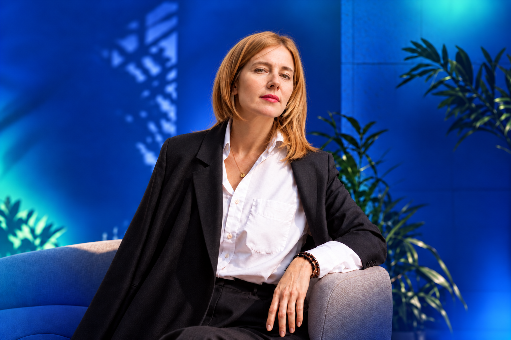

«Я всё держу
на себе»
Много ответственности, трудно отпустить контроль. Даже отдых превращается в ещё одну задачу.

Психолог · консультант · куратор
И выбрать,
куда дальше
Индивидуальные консультации
о жизненных и профессиональных переменах
Психология · Творчество · Перемены
Точка перемен
Иногда внешне всё в порядке. Но внутри — усталость, сомнения
или ощущение, что живёшь не совсем свою жизнь.
Много ответственности, трудно отпустить контроль. Даже отдых превращается в ещё одну задачу.
Привычная работа или отношения больше не устраивают. А новое направление пока не складывается.
Знаете и умеете многое, но трудно заявить о себе, назвать цену, дать своему делу место в жизни.
Обстоятельства меняются, а реакции и переживания остаются знакомыми. Хочется понять, что за этим стоит.
Можно прийти и без чёткого запроса
Начнём с того, что сейчас происходит с вами
Искусство видеть больше
В человеке, в жизни, в возможностях
Давайте познакомимся
Психолог и куратор-консультант в сфере искусства
Тридцать лет я руководила проектами в сфере искусства: работала с людьми, творческими идеями и их воплощением. Последние пять лет провожу онлайн-консультации по вопросам реализации человека.
Этот опыт помогает мне видеть за запросом целую жизнь — с работой, отношениями, семьёй, творчеством и поиском смысла.
Ко мне приходят мужчины и женщины, которые уже не хотят жить по-старому, но ещё не разобрались, как по-новому.
Ближе познакомитьсяМой подход
Замечать, что происходит внутри. Давать место своим чувствам и желаниям.
Выберите точку — откройте смысл
Мне важно не только то, что вам мешает. Важно и то, к чему хочется прийти: к интересу, близости, своему делу, ощущению свободы.
Мы исследуем вашу ситуацию, привычные реакции и внутренние противоречия. Ищем, на что вы можете опереться и какой следующий шаг будет вашим.
Внимание к вашим словам, образам и ощущениям. Без необходимости подстраиваться под готовый ответ.
Смотрим, как внутренние изменения могут проявиться в решениях, отношениях и собственном деле.
В моём опыте — коучинг, «Чистый язык», ДПДГ и работа с эмоциональной памятью. Я изучаю реконсолидацию памяти и обсуждаю с клиентами свои наблюдения. Выбор способа работы зависит от конкретного запроса.
Форматы работы
Индивидуальные консультации онлайн
или очно в Москве.
Можно начать с одной встречи,
а затем решить, нужно ли продолжение.
Пространство для вашего запроса: разобраться в ситуации, заметить важное и наметить следующий шаг.
Диагностика запроса и углублённая работа с тем, что вас беспокоит.
Пять индивидуальных встреч для последовательной работы с вашим запросом.
Одна встреча — 5 000 ₽
ЗаписатьсяВыездные ретриты, групповые встречи и форумы — ещё один способ исследовать себя через общение и новый опыт.
Лара, спасибо за опыт первой встречи! Вчера было очень глубокое погружение в состояние гипноза. Понравилось то, что в нём я ощущал себя безопасно и комфортно ☀️
Сегодня состояние энергичное! с чистым желанием творить)) с утра поработал над подвисшими проектами. Еду на две рабочие встречи и в целом чувствую легкость и уверенность в своей эффективности.
Я заметил, что я заново как будто на автомате вспоминаю болезненные жизненные моменты, но погрузиться не могу в них. Меня прямо выталкивает оттуда, и воспоминания, даже если они у меня и есть, сейчас не вызывают никаких эмоций, и я больше не «загоняюсь» по ним.
Хочу сказать Ларисе большое спасибо, за то, что за небольшой срок, мы сумели меня «раскрутить», докопаться и это уже принесло свой эффект. Впереди ещё есть работа и я уже в предвкушении от эффектов и результатов, которые намечаются.
У меня перестали колобродить в голове навязчивые мысли. Я перестала постоянно себя обесценивать и погружать в негатив. Причём по мне этого никогда особо и не скажешь. Я всегда производила впечатление позитивного, активного человека. Просто люди не знали, какая борьба при этом происходила у меня внутри.
Я практически не замечаю негативных мыслей. Иногда что-то появляется, но это уже скорее какое-то далёкое эхо из прошлой жизни. Оно приходит и уходит, а я не проваливаюсь туда, как раньше.
В результате это позволило нам постепенно выстроить отношения заново, заново выстроить доверие. Понять и простить друг друга. Считаю что Лариса сыграла в этом процессе роль катализатора. Она не спасала брак, но она помогла мне войти в контакт с самим собой во время этого кризиса. И это помогло мне пройти через всё это и не наломать дров.
Очень благодарен Ларисе за это сопровождение в путешествии к себе: более счастливому и цельному.
Полные истории и больше отзывов — в Telegram-канале
Личный опыт одного человека. У каждого работа проходит по-своему.
Перед первой встречей
Расскажите, что сейчас происходит и что хотелось бы изменить. Не нужно заранее подбирать правильные слова или знать название своего запроса.
Напишите мне в Telegram. Обсудим вашу ситуацию, подходящий формат, время и детали оплаты. Индивидуальные консультации проходят онлайн или очно в Москве. Место очной встречи согласуем при записи.
Можно начать с одной консультации. Вопрос продолжения обсудим с учётом вашего запроса и опыта первой встречи.
Я не работаю с клиническими случаями. Моя практика посвящена жизненным и профессиональным ситуациям, отношениям и реализации человека.
Вы привыкли принимать решения и быть опорой для других. Здесь можно поговорить о том, что происходит с вами — без необходимости держаться и заранее знать ответы.
Напишите, что сейчас больше всего занимает ваши мысли. С этого и начнём.
Написать Ларисе